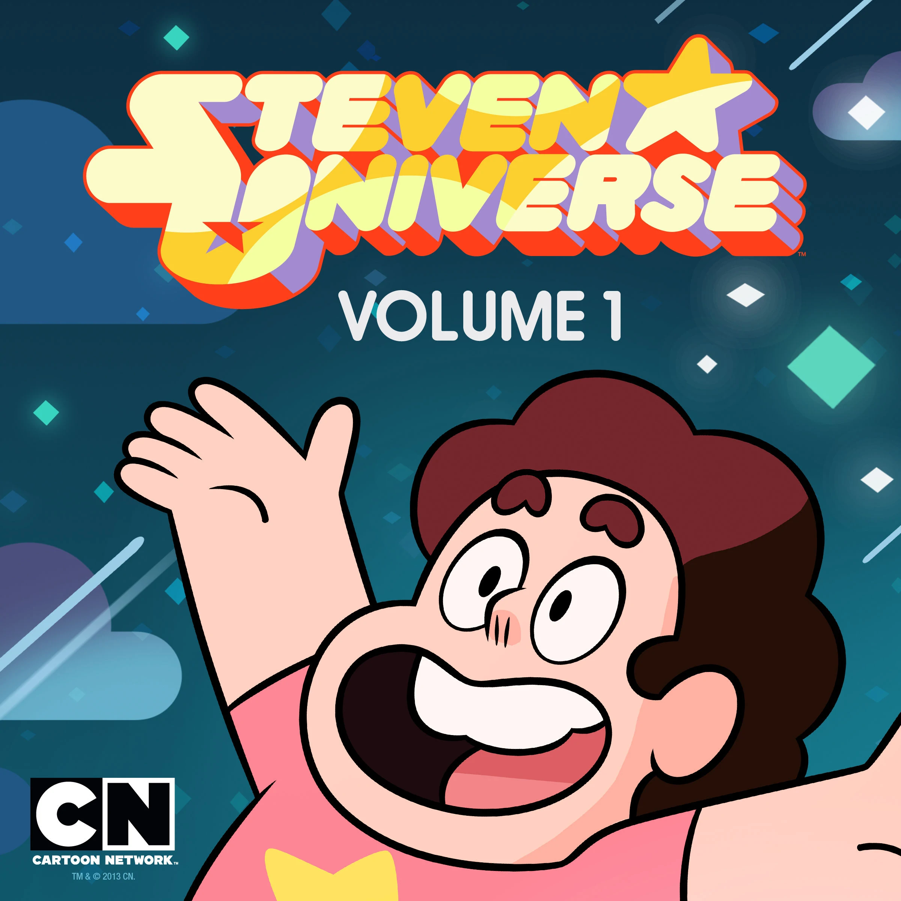

La primera temporada presenta a Steven Universe, un niño mitad humano y mitad Gema, y su vida junto a las Gemas de Cristal: Garnet, Amethyst y Pearl.
Los episodios iniciales se centran en aventuras autónomas y la construcción del mundo.
Se revela gradualmente la historia de fondo, incluida la desaparición de la madre de Steven, Rose Quartz, y el misterio que rodea su legado.
La temporada explora temas de identidad y amistad mientras Steven aprende a usar sus propios poderes.
